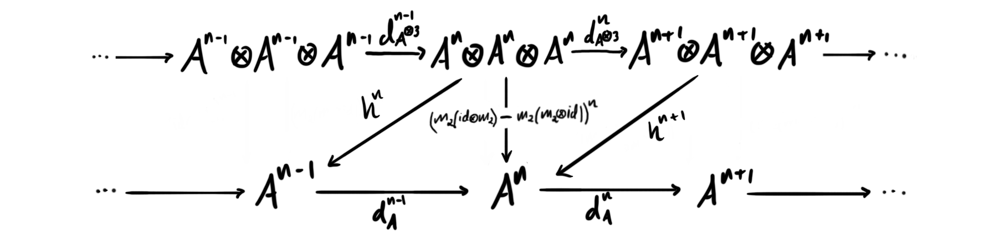

In the two last posts we have been discussing operations that are associative up to homotopy, and where such operations might arise naturally in topology. One claim I made, which I later realized was maybe a bit unmotivated and in need of some clarification was how some higher arity maps actually defined (or were defined by) homotopies between combinations of the lower arity maps. We also purely looked at this in a topological setting, but in algebraic topology we often translate to algebraic structures, so I also wanted to see clearly that the same constructions hold in that setting. To be more precise I am talking about the claim that a map we denoted by $m_3$ was a homotopy between $m_2(id\otimes m_2)$ and $m_2(m_2 \otimes id)$, where $m_2$ was a product induced through a homotopy equivalence. Don’t worry if you don’t recall the definitions and this problem, we will go through it again shortly. Today we in fact upgrade this earlier homotopy equivalence slightly such as to have a bit more to work with. As said we also take a turn away from standard topology and make our choice of “space” for this post to be chain complexes of vector spaces. I will not cover in detail why this is a reasonable thing to do but I will mention that the de Rham complex of a manifold, the rational singular cochains on a topological space and the rational cohomology of a topological space are all such structures. So, if we believe that algebraic topology is a nice way to study spaces, then studying these should be highly relevant.
Before we start I want to warn that this post might be a bit long and possibly quite terse. It comes from me trying to understand the statement explained above in such detail that everyone that has written something about this in the literature seemingly does. The founder of these ideas, James Stasheff, has some nice explanations for when “space” means topological space, as we hinted at in an earlier post describing the Stasheff associahedra $K3$ as a space that parametrizes operations between the two ways of combining $m_2$ with it self. There is a brief explanation in the book Algebraic operads by Valette and Loday where they prove that $m_3$ is a homotopy in the algebraic setting as well, but I found it a bit lacking in detail for my own complete understanding. It may be just me who is slow and needs every detail to make everything click… Anyway, lets go on a unnecessarily detailed, terse and long journey exploring this rather simple question: How can we make a homotopy $m_3$ between $m_2(id\otimes m_2)$ and $m_2(m_2 \otimes id)$?
Preliminaries
Lets start of by defining the key players that we need. I will assume some more general theory to be known, i.e. some algebraic topology and some homological algebra. Let’s kick it off by recalling what the hell a homotopy is in our algebraic setting of chain complexes.
Definition (Chain homotopy): Let $A$ and $B$ be chain complexes and $f, g\colon A\longrightarrow B$ be two morphisms between them. A homotopy between $f$ and $g$ is a degree $-1$ map $h\colon A\longrightarrow B$ such that $f-g = d_B\circ h + h\circ d_A$.
With this in hand we jump straight to looking at the system we will be in for the rest of the post, namely the deformation retraction.
Definition (Deformation retraction): Let $(A, d_A)$ and $(B, d_B)$ be cochain complexes, and let $p\colon A\longrightarrow B$ and $i\colon B\longrightarrow A$ be morphisms between them. We call $p$ a deformation retraction if $p\circ i = id_B$ and there exists a homotopy $i\circ p\overset{h}\sim id_A$. If there exists a deformation retraction $A\longrightarrow B$, then we say $A$ is a deformation retract of $B$. We sometimes denote a deformation retraction by $(A, B, i, p, h)$.
Note that a deformation retraction is in particular a homotopy equivalence. In fact, it can be shown that two cochain complexes are homotopy equivalent if and only if they are both deformation retracts of another cochain complex. Hence these deformation retracts are intimately linked with the homotopy theory of complexes. In the first post we tried to transfer a product on a topological space through a homotopy equivalence, so if we want to look at the same setting in this more algebraic case we need to know what a “space” with an operation is.
Definition (dg-algebra): A differential graded algebra $A=(\bigoplus_{i\in \mathbb{Z}} A_i, m, d)$, often called just a dg-algebra or a DGA, is a graded associative algebra $(A, m)$ together with a degree $+1$ map $d: A\rightarrow A$, often called the differential, such that
- $d\circ d = 0$
- $d(a\cdot b) = d(a)\cdot b + (-1)^{|a|}a\cdot d(b)$.
Alternatively we can describe it as a chain complex $A$ with a grading respecting product $m:A^n\otimes A^m\longrightarrow A^{m+n}$ such that the second condition above holds. Hopefully one recognizes the first condition as $A$ being a cochain complex and the second as the product $m$ in $A$ satisfying the graded Leibniz rule with respect to the differential $d$. If you do not recognize these, then take these as definitions instead.
The last thing we need is a rule that tells us how to combine tensor products of morphisms, called the Koszul grading rule. It is given by
$$(f_1\otimes f_2)\circ(g_1\otimes g_2) = (-1)^{|f_2||g_1|}f_1 \circ g_1 \otimes f_2 \circ g_2.$$
It also determines how to evaluate such a morphism on elements, by
$$(f_1\otimes f_2)(a\otimes b) = (-1)^{|f_2||a|}f_1(a) \otimes f_2(b).$$
Setup
The whole scenario comes from the following problem, which should feel familiar to the reader that has ready the other two posts: If we have a dg-algebra $(A, m, d_A)$ and a deformation retraction $(A, B, i, p, h)$ onto a chain complex $(B, d_B)$, can we induce a dg-algebra structure on $B$?
The natural thing to try is to define $m_2:B\otimes B\longrightarrow B$ by $m_2 = p\circ m\circ i\otimes i$, which is exactly the strategy we used last time as well. For simplicity we omit the composition symbols for the rest of today. So what about the ternary map $m_3$? We know from the topology we discussed earlier that we want it to be a homotopy, so it has to have degree $-1$. We have a map present that shifts the degree down by one, namely the homotopy $h$. So for example instead of doing $p(m(ipm\otimes 1)(i\otimes i\otimes i)$ we replace $ip$ by $h$ to get something like $p(m(hm\otimes 1)(i\otimes i\otimes i)$, which now has degree $-1$. There are two ways of doing this, so it is perhaps not unintuitive that we define
$$m_3 = p(m(hm\otimes id)-m(id\otimes hm))(i\otimes i\otimes i).$$
We can view $m_3$ as an element in $Hom(A^{\otimes 3}, A)$. This space can be made into a chain complex by defining the boundary operator as follows:
$$\partial f = d_A f - (-1)^{|f|} f d_{A^{\otimes 3}}$$
where $d_{A^{\otimes 3}} = (d_A, id, id)+(id, d_A, id)+(id, id, d_A)$ and $f$ just some generic element in $Hom(A^{\otimes 3}, A)$ of degree $|f|$. In particular we have that $\partial m_3 = dm_3 + m_3 d_{A^{\otimes 3}}$. Notice that $m_2(m_2\otimes id)$ and $m_2(id\otimes m_2)$ are also elements of $Hom(A^{\otimes 3}, A)$ and are both maps of degree zero. Let’s draw them in a diagram.
A homotopy between $m_2(id\otimes m_2)$ and $m_2(m_2\otimes id)$ would be a map $h\colon A^{\otimes 3}\longrightarrow A$ of degree $-1$ such that
$$d_A^{n-1}\circ h^{n} + h^{n+1}\circ d_{A^{\otimes 3}}^n = m_2(id\otimes m_2)-m_2(m_2\otimes m_2).$$

But notice that this is exactly just showing that $\partial h = m_2(id\otimes m_2)-m_2(m_2\otimes id)$! Hence for $m_3$ to be the homotopy we want between $m_2(id\otimes m_2)$ and $m_2(m_2\otimes id)$ we must show that $\partial m_3 = m_2(id\otimes m_2)-m_2(m_2\otimes id)$. This is often just stated as being the case in most surveys, or the proof skips too many steps to actually figure out what’s going on. The reason we introduce this boundary operator is because it hopefully gives some flashbacks to topology, and how the boundary of standard simplices (for example one given by $K3$) is calculated.
This is the reason why I wanted to make this post, to actually calculate this and see that it holds. If you believe me when I say it is true, then you can stop reading now, as the rest will be mostly just calculation.
“Shut up and calculate” - My friend Karl
We denote $id$ by $1$ to make it more distinguishable from $d_A$ – which we denote by just $d$ – and eventual copies of $i\circ d$. We also skip writing $\circ$, and denote it instead just by concatenation, so $d\circ m_3 = dm_3$. Since $m_3$ consists of $i, p$ – which are degree $0$ – and $h$ – which has degree $-1$, we have $|m_3|=-1$. The boundary of $m_3$ is then
\begin{aligned}
\partial m_3
&= dm_3+m_3(d,1,1)+m_3(1,d,1)+m_3(1,1,d) \\
&= dm_3 +p((-1)^{|1||d|}m(hm(id\otimes i)\otimes i) -(-1)^{|hm||d|}m(id\otimes hm(i\otimes i))) \\
&\hspace{13mm} +p((-1)^{|1||1|}m(hm(i\otimes id)\otimes i) -(-1)^{|hm||1|}m(i\otimes hm(id\otimes i))) \\
& \hspace{13mm} +p((-1)^{|1||1|}m(hm(i\otimes i)\otimes id) -(-1)^{|hm||1|}m(i\otimes hm(i\otimes id)))
\end{aligned}
where the signs appear due to the Koszul grading rule. As the identity morphism has degree $0$ most of these vanish, except for $(-1)^{|hm||d|}$. The composite map $hm$ has degree $|h|+|m| = -1+0 = -1$ and the differential $d$ has degree $1$ as we work with cohomological grading. Since $i$ is a morphism of chain complexes it commutes with the differentials, hence we can put all the $i$‘s outside together to get
\begin{aligned}
\partial m_3 &= dm_3 +p(m(hm(d\otimes 1)\otimes 1) +m(d\otimes hm) \\
& \hspace{17mm} +m(hm(1\otimes d)\otimes 1) -m(1\otimes hm(d\otimes 1)) \\
& \hspace{17mm} +m(hm\otimes d) -m(1\otimes hm(1\otimes d))(i\otimes i\otimes i)
\end{aligned}
We haven’t touched the $dm_3$ part yet, so lets see what this gives us. We get
\begin{aligned}
dm_3 &= d(p(m(hm\otimes 1) -m(1\otimes hm))(i\otimes i\otimes i)) \\
&= p(dm(hm\otimes 1) -dm(1\otimes hm))(i\otimes i\otimes i)
\end{aligned}
Since $A$ is a dg-algebra we can use the graded Leibniz rule to expand $dm$ into $m(d\otimes 1)+m(1\otimes d)$. Doing that both places they appear above we get
\begin{aligned}
dm_3 &= p((m(d\otimes 1) +m(1\otimes d))(hm\otimes 1) \\
&\quad -(m(d\otimes 1) +m(1\otimes d))(1\otimes hm))(i\otimes i\otimes i) \\
&= p((m(d\otimes 1) +m(1\otimes d))(hm\otimes 1) \\
&\quad -m(d\otimes 1) -m(1\otimes d)(1\otimes hm))(i\otimes i\otimes i) \end{aligned}
To contract this we need to apply the Koszul grading rule. For the individual pieces in the above equation we get
\begin{aligned}
m(d\otimes 1)(hm\otimes 1) &= (-1)^{|1||hm|}m(dhm\otimes 1) \\
m(1\otimes d)(hm\otimes 1) &= (-1)^{|d||hm|}m(hm\otimes d) \\
m(d\otimes 1)(1\otimes hm) &= (-1)^{|1||1|}m(d\otimes hm) \\
m(1\otimes d)(1\otimes hm) &= (-1)^{|d||1|}m(1\otimes dhm) \end{aligned}
where as before all signs are $1$ except $(-1)^{|d||hm|}=-1$. Thus we have
\begin{aligned} dm_3 &= p(m(dhm\otimes 1)-m(hm\otimes d)-m(d\otimes hm)-m(1\otimes dhm))(i\otimes i\otimes i) \end{aligned}
We know that $h$ is a homotopy between $i\circ p$ and $id_A$, and for chain complexes this means that $dh+hd=i\circ p - id_A$. This gives us that we can replace $dh$ by $id_A-i\circ p-hd$ in the equation above. Doing this gives us
\begin{aligned}
dm_3
&= p(m((1-ip-hd)m\otimes 1)-m(hm\otimes d)-m(d\otimes hm) \\
&\quad -m(1\otimes (1-ip-hd)m))(i\otimes i\otimes i) \\
&= p(m(m\otimes 1)-m(ipm\otimes 1)-m(hdm\otimes 1) \\
&\quad -m(hm\otimes d)-m(d\otimes hm) \\
&\quad -m(1\otimes m)+m(1\otimes ipm)+m(1\otimes hdm))(i\otimes i\otimes i)
\end{aligned}
Notice that we have both $m(m\otimes 1)$ and $m(1\otimes m)$ present, with the opposite signs. These two are just repeated products in $A$, so their difference form the associatior $m(m\otimes 1)-m(1\otimes m)$ in $A$, which is of course just $0$ as we know $A$ is associative.
After canceling the associator in $A$, and rearranging the terms a bit nicer, we can venture further by again applying the graded Leibniz rule to the $dm$‘s. This gives us
\begin{aligned}
dm_3
&= p(m(1\otimes ipm)-m(ipm\otimes 1) \\
&\quad -m(h(m(d\otimes 1)+m(1\otimes d))\otimes 1) \\
&\quad -m(hm\otimes d)-m(d\otimes hm) \\
&\quad +m(1\otimes h(m(d\otimes 1)+m(1\otimes d))))(i\otimes i\otimes i) \\
&= p(m(1\otimes ipm)-m(ipm\otimes 1) \\
&\quad - m(hm(d\otimes 1)\otimes 1) - m(hm(1\otimes d)\otimes 1) \\
&\quad +m(hm\otimes d)+m(d\otimes hm) \\
&\quad +m(1\otimes hm(d\otimes 1))+m(1\otimes hm(1\otimes d)))(i\otimes i\otimes i)
\end{aligned}
Now we are finally ready to put everything together. Recall we wanted to find $\partial m_3 = dm_3 + m_3d_{A^{\otimes 3}}$. The calculation has been so long that is hard to remember what we actually were doing. We have found both parts of this equation, and putting them together we have
\begin{aligned}
\partial m_3
&= p(m(1\otimes ipm)-m(ipm\otimes 1) \\
&\quad - m(hm(d\otimes 1)\otimes 1) - m(hm(1\otimes d)\otimes 1) \\
&\quad -m(hm\otimes d)-m(d\otimes hm) \\
&\quad +m(1\otimes hm(d\otimes 1))+m(1\otimes hm(1\otimes d))(i\otimes i\otimes i) \\
&\quad +p(m(hm(d\otimes 1)\otimes 1) +m(d\otimes hm) \\
&\quad +m(hm(1\otimes d)\otimes 1) -m(1\otimes hm(d\otimes 1)) \\
&\quad +m(hm\otimes d) -m(1\otimes hm(1\otimes d))(i\otimes i\otimes i) \\
&= p(m(1\otimes ipm)-m(ipm\otimes 1) \\
&\quad - m(hm(d\otimes 1)\otimes 1) - m(hm(1\otimes d)\otimes 1) \\
&\quad -m(hm\otimes d)-m(d\otimes hm) \\
&\quad +m(1\otimes hm(d\otimes 1))+m(1\otimes hm(1\otimes d) \\
&\quad +m(hm(d\otimes 1)\otimes 1) +m(d\otimes hm) \\
&\quad +m(hm(1\otimes d)\otimes 1) -m(1\otimes hm(d\otimes 1)) \\
&\quad +m(hm\otimes d) -m(1\otimes hm(1\otimes d))(i\otimes i\otimes i)
\end{aligned}
where in the last equality we have just put the $p$ on the left and the $i$‘s on the right. This is just to have everything inside the same bracket, i.e. $p(\text{all the stuff})(i\otimes i\otimes i)$, which we can do as they are linear. We see that almost everything on the inside cancels nicely, and we are left with
$$\partial m_3 = p(m(1\otimes ipm)-m(ipm\otimes 1))(i\otimes i\otimes i)$$
Expanding this we get
$$\partial m_3 = pm(1\otimes ipm)(i\otimes i\otimes i) - pm(ipm\otimes 1)(i\otimes i\otimes i)$$
which we recognize as $m_2(1\otimes m_2) - m_2(m_2\otimes 1)$. This means we are finally left with what we wanted to show:
$$\partial m_3 = m_2(1\otimes m_2)-m_2(m_2\otimes 1)$$
i.e. the associator of $m_2$. All this to justify the following image:
As $m_3$ is the homotopy of the associator, we call it the associating homotopy of $m_2$. This does really show how cleverly the algebraic versions of topological objects are defined, and how cool the field of algebraic topology really is! We can translate back and forth between algebra and topology without any real problems, and the translations allows us to use both algebra and topology for insight into the problems. Such connections is precisely why I entered into this field some years ago.
Closing remarks
This relation will in the next post reveal itself to be one of an infinite tower of relations that define an $A_\infty$-algebra. It will actually be the third relation, and we have already seen the first two. The first one will just give us the cochain complex rule, $d^2=0$, and the second one will give us the graded Leibniz rule. Hence we will see that the dg-algebras we defined today really are some examples of “easy” $A_\infty$-algebras. These information packed algebraic structures will the codify what we mean by “related by higher homotopies” which we sometimes throw around willy-nilly. If you hadn’t already guessed it, this is part of what I am writing about for my master thesis! When I hand it in I hope to have explained all the parts that go into it already on this blog, in that way making a summary post will be easier and will build on established older posts.